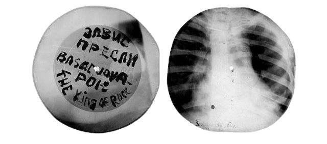

om

bone music [roentgenizdat]
var et fænomen i sovjetunionen i 1940'erne——60'erne, hvor unge smuglede forbudt vestlig musik ved at trykke grammofonplader på brugte røntgenbilleder.
dette projekt udspringer af samme ånd:
01 søger mod at bryde afstanden mellem artisten og opleveren.
ved at dele inspirationer, billeder og lydfiler mm. fra udvalgte projekter, bliver man som lytter inviteret ind i skabelsesprocessen og endnu tættere på mennesket bag musikken. værket står hermed til frit skue -
som knoglerne på røntgenpladerne.